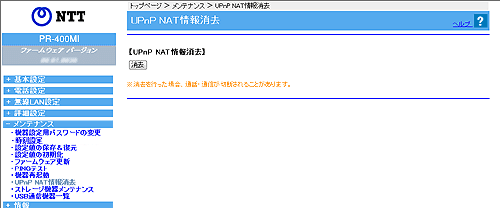

メンテナンス−UPnP NAT情報消去
UPnPにより設定された、NAT情報が400件まで登録されます。（UPnP NAT情報登録件数を確認したい場合は、UPnP NAT設定情報の画面より確認してください。）
400件を超えてUPnP NAT情報を登録しての通信はできません。この場合は、UPnP NAT情報エントリを消去することにより、新しい通信ができるようになります。
※「Web設定」画面に表示されているボタンについての説明は
こちら

1.
［消去］をクリックする
すべてのUPnP NAT設定情報が消去されます。
＜お知らせ＞
UPnP NAT情報消去を行うと、これまでに登録されていたUPnP NAT情報エントリはすべて消去され、一時的にインターネットに対するすべての通信ができなくなります。
↑ページのトップへ